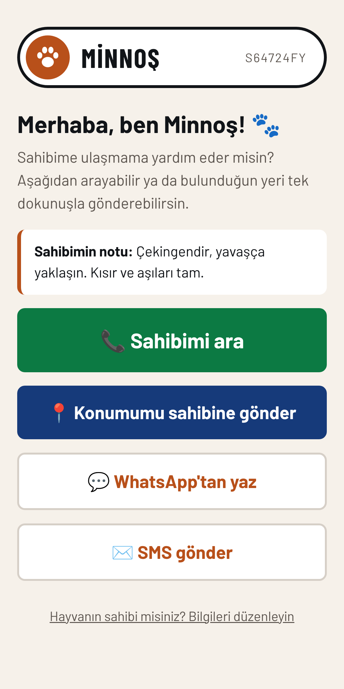

❤️
Sevgini önlemle göster.
Hazır rozet250 TL
Kendi tasarımın399 TL
Rozetini şimdi altasma.bulqr.com.trInstagram · @tasmaqr
Sevgileri koşulsuz, sadakatleri sonsuz.
Küçük bir önlem, büyük bir üzüntüyü önler.
Zeytin bir sesten korktu ve koştu. Arkasına bakmadan.
Bulan kişi telefon kamerasıyla okutur, seni tek dokunuşla arar. Uygulama gerekmez.
